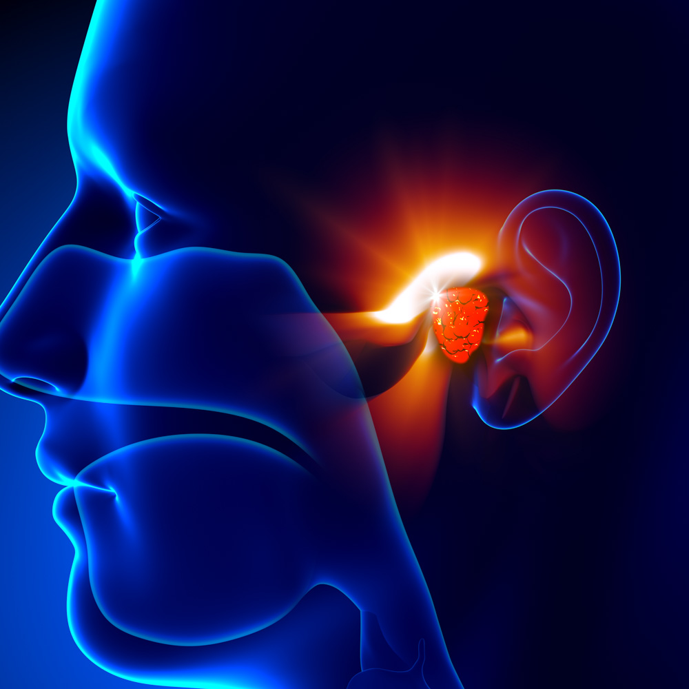
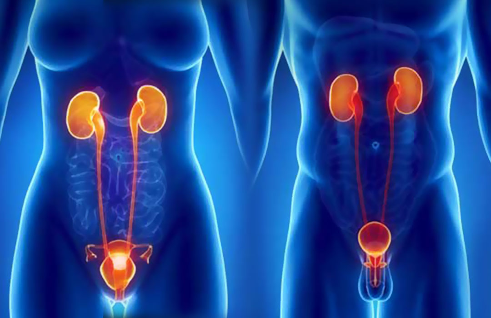

Visite specialistiche
Scopri i nostri trattamenti specializzati, dalla fisioterapia ai test diagnostici fino alle terapie alternative, per il tuo benessere completo.
Clicca su ogni specialità per visualizzare informazioni dettagliate e approfondite.
Agopuntura

Allergologia
Biologia nutrizionale
Cardiologia
Chirurgia generale
Chirurgia plastica e Medicina estetica
Chirurgia vascolare, Angiologia ed Eco-Color-Doppler
Chirurgia vertebrale
Dermatologia e Venereologia

Dietistica
Ecografia
Ematologia (malattie del sangue)
Endocrinologia e Diabetologia
Fisioterapia
Gastroenterologia ed Endoscopia digestiva
Ginecologia e Ostetricia

Logopedia
Medicina del lavoro
Medicina dello sport
Medicina fisica e riabilitativa (fisiatra)
Medicina interna / reumatologia
Medicina legale e assicurativa
Nefrologia
Neurologia
Oculistica e Oftalmologia

Omeopatia
Ortopedia

Otorinolaringoiatria e Chirurgia estetica nasale
Pneumologia

Podologia
Psichiatria e Psicologia
Reumatologia
Senologia
Terapia del dolore / Anestesiologia
Terapie alternative

Urologia e Andrologia
Vulnologia (trattamento e cura ulcere)
NeuropsicomotricitÃ